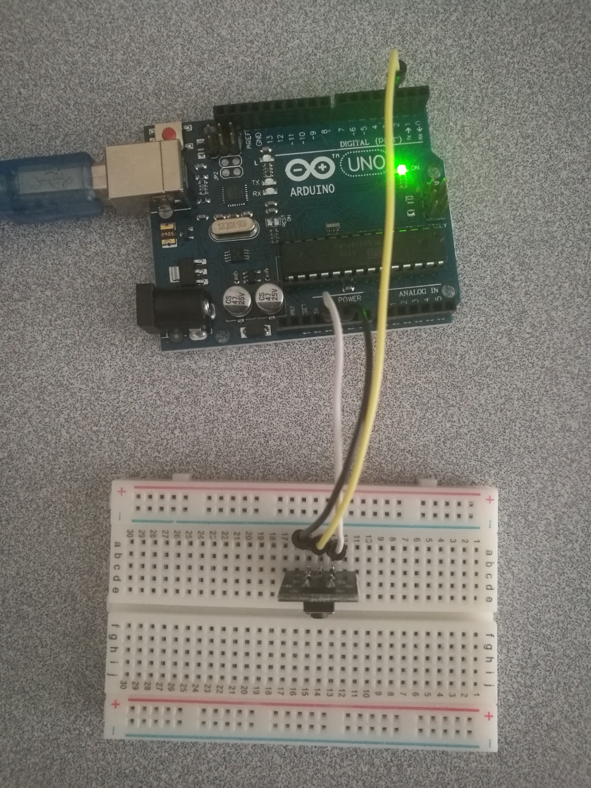

Button
Hardware Wiring

Sketch
int Led=13;//定义LED 接口
int buttonpin=3; //定义按键开关传感器接口
int val;//定义数字变量val
void setup()
{
pinMode(Led,OUTPUT);//定义LED 为输出接口
pinMode(buttonpin,INPUT);//定义按键开关传感器为输出接口
}
void loop()
{
val=digitalRead(buttonpin);//将数字接口3的值读取赋给val
if(val==HIGH)//当按键开关传感器检测有信号时,LED 闪烁
{
digitalWrite(Led,HIGH);
}
else
{
digitalWrite(Led,LOW);
}
}